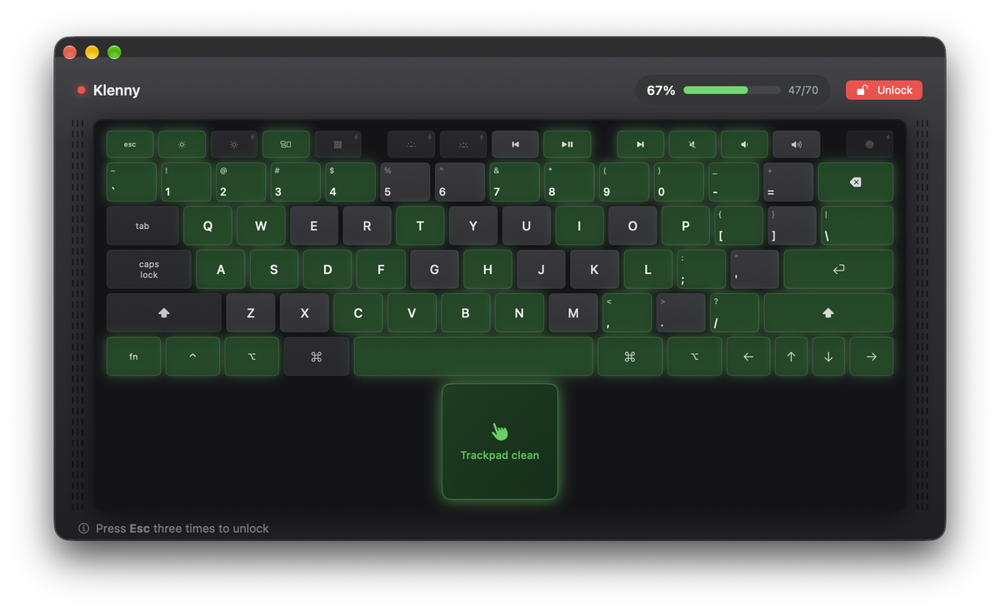
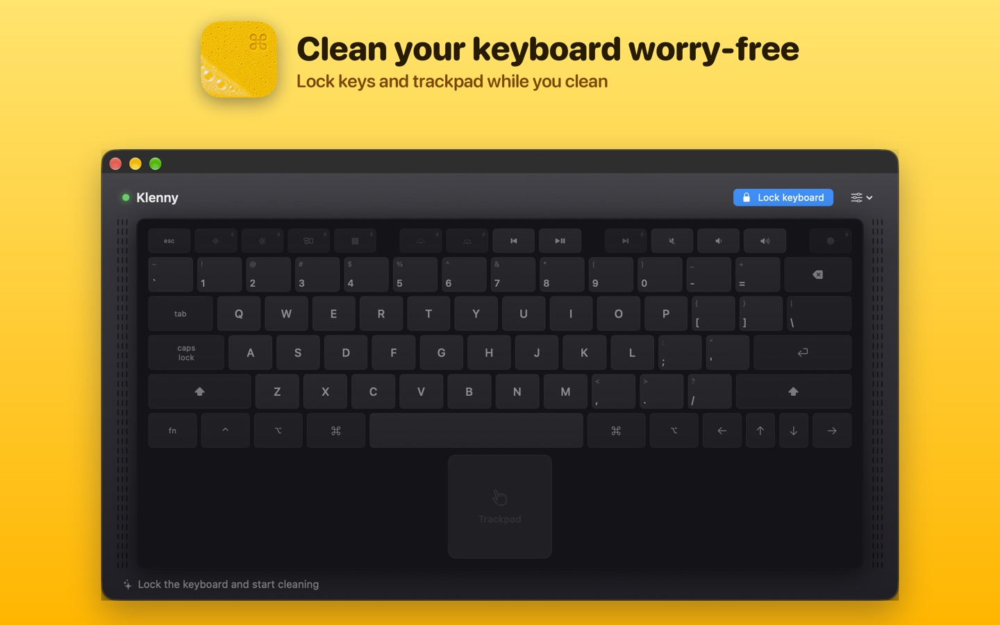
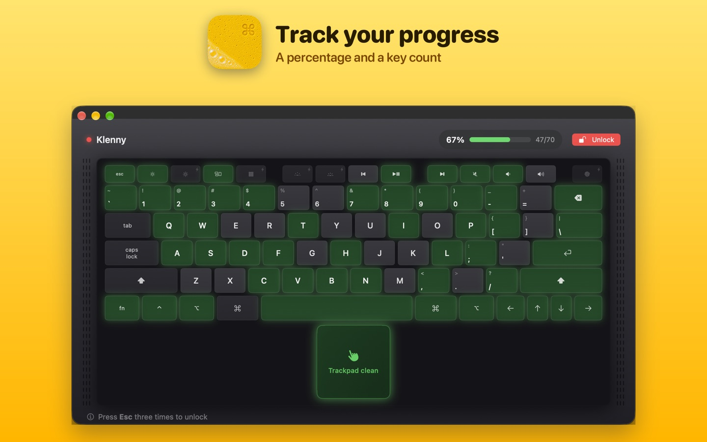
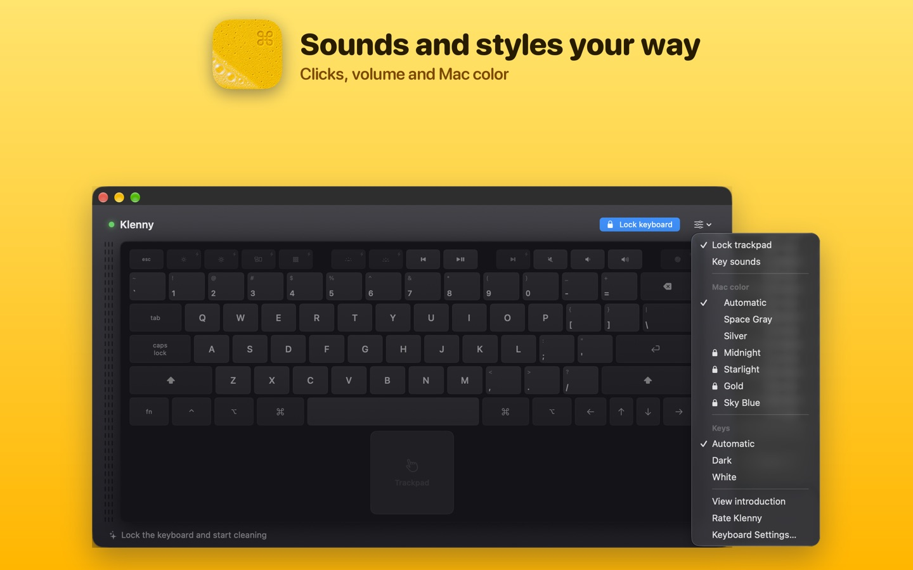
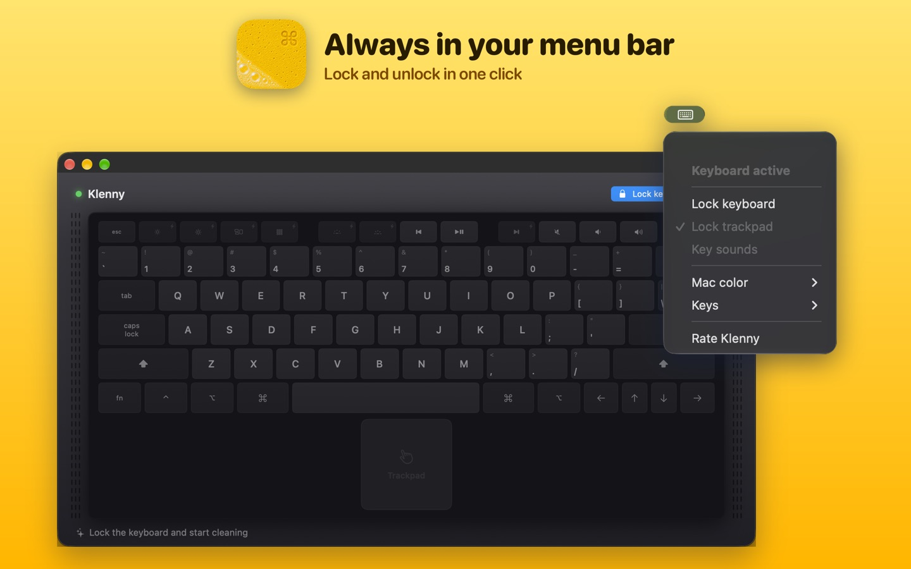

Keyboard Lock
Suppresses accidental key input while cleaning your keyboard.
Lock your keyboard.
Clean your Mac.
A native macOS utility that blocks accidental keyboard and trackpad input while you clean your Mac. Unlock safely when you are done.

Screenshots




Features
Suppresses accidental key input while cleaning your keyboard.
Helps avoid cursor movement and clicks while wiping your MacBook.
Start and stop cleaning mode from the macOS menu bar.
Press Esc three times to unlock. Locking also ends on its own if your Mac sleeps or the screen locks.
Visual feedback helps you see what keys have been touched.
Optional key sounds and seven Mac finishes, including Midnight, Starlight, Gold and Sky Blue. All included with your purchase.
Technical Build
Native menu bar popover, onboarding, virtual keyboard, and trackpad interface.
Uses a CGEvent session tap to suppress keyDown, keyUp, and modifier events while cleaning mode is active.
Detects input devices and supports hardware-aware keyboard and external mouse workflows.
Guides users through Accessibility and Input Monitoring permissions required for input blocking.
Tracks an ANSI keyboard layout with visual cleaning feedback and escape-key recovery.
No keystroke storage, analytics, accounts, or custom backend services.
Privacy
Klenny uses macOS system permissions only to block input while cleaning. It does not record keystrokes, send analytics, or connect to a custom backend.